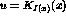
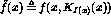
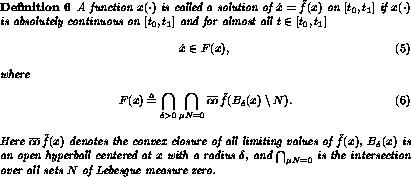
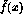

If we use a piecewise continuous state feedback controller

the right hand side of the closed system (4),
becomes discontinuous. There are several ways to define what we mean by a solution to such a system. For example it is possible to define solutions according to Filippov [5].

The definition can be interpreted as follows: the tangent vector to a solution, where it exists, must lie in the convex closure of the limiting values of the vector field in progressively smaller neighborhoods around the solution point.
Note that F(x) in (5) is a set-valued function but corresponds to a singleton in the domains of continuity of

.Solutions to differential inclusions of the type (5) can be shown to exist under rather general conditions [5]. It can be shown that there always exists a solution of the system (1) if we switch among the controllers (2) in a sufficiently regular way. Here we have no intention of going into detail of existence issues. In the sequel we will assume that the chosen switching function or switching rule guarantee that a solution always exist.
Investigations of Lyapunov stability of nonsmooth systems can be found in [5, 13].